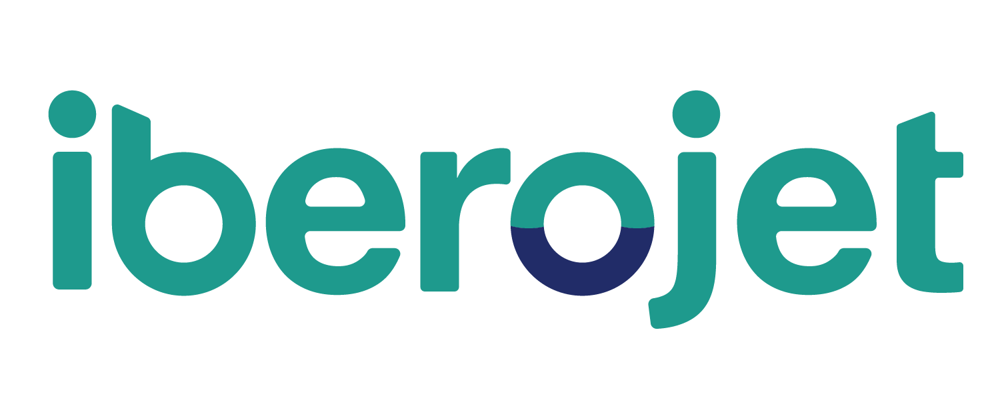
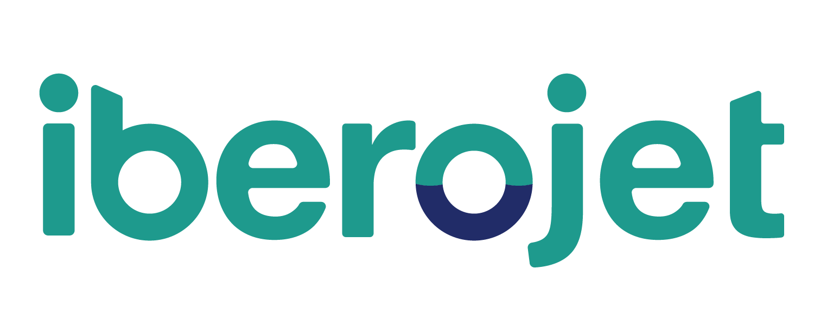
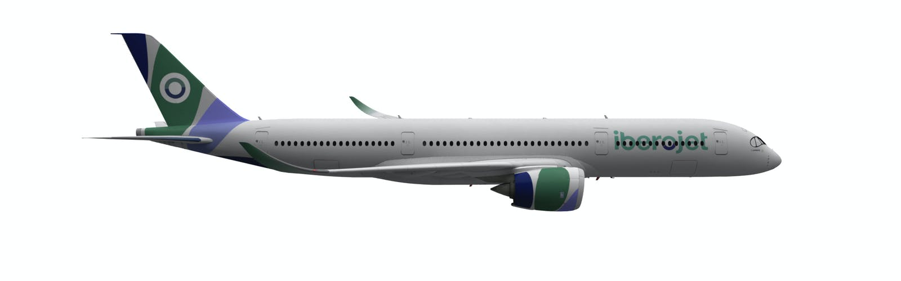
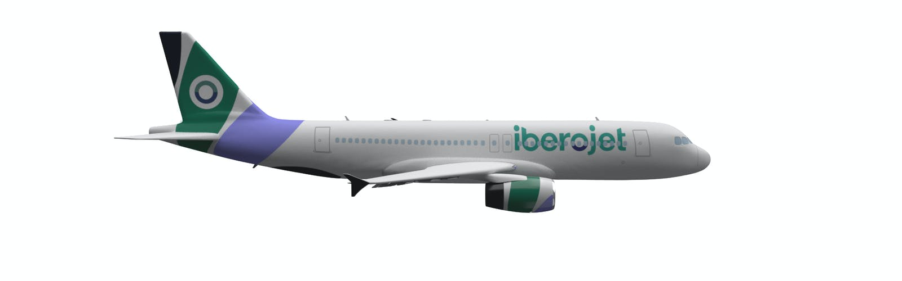
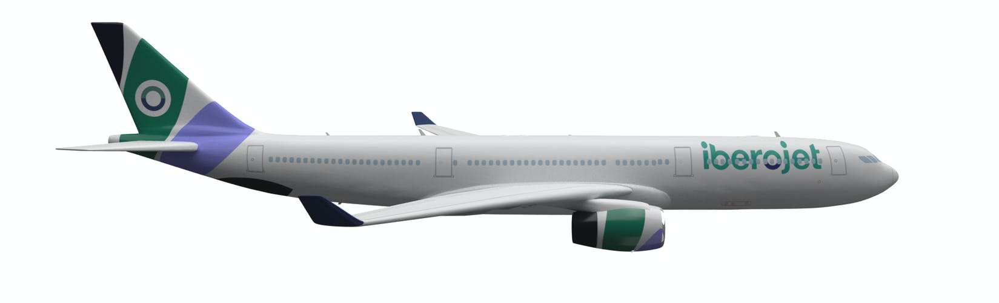

|  |
|  |
|
A Orbest, agora denominada Iberojet, é uma companhia aérea portuguesa e subsidiária da companhia aérea espanhola Evelop Airlines, tem a sua sede no aeroporto de lisboa, opera voos regulares e charter em opções de curtos e longo curso, de Portugal para o mundo. Fundada em 2007, a empresa torna-se propriedade do Grupo Orizonia (grupo turístico espanhol fundado em 2006. Terceira maior operadora de turismo em Espanha), a mesma acaba em colapso, mudando para o grupo Barceló. |

|
A empresa foi criada em 2007 pelo Grupo Orizonia.
Dá início ás suas operações apenas com o Airbus A330-200, registado com CS-TRA, esta permanece na companhia até ao ano de 2010, quando o grupo anuncia um upgrate para um novo e maior Airbus A330-300.
Após o declínio da Orizonia Corporation, a Orbest foi adquirida pelo Grupo Barceló (subsidiaria e empresa de turismo, uma das mais importantes do mundo.). Esse mesmo grupo cria também uma nova companhia aérea, a Evelop Airlines, para operações em Espanha, a mesma recebe aviões da Orbest, assim todas as aeronaves são operadas por ambas as companhias.
Para mais informações aceda aqui .
A350-900Este avião tem a capacidade de transportar até 432 passageiros. Tem uma velocidade de descolagem de 280 Km/h, 240 Km/h de aterragem e a sua velocidade máxima pode ir até os 15.000 Km. |
 |
|  |
Airbus A320-214O Airbus A320-214 tem a capacidade de 180 passageiros. A sua velocidade de descolagem é de 280 Km/h. enquanto a de aterragem é de 240 Km/h. Pode alcançar os 5.500 Km. |
Airbus A330-300O ultimo modelo da frota é o Airbus A330-300, transporta até 388 passageiros. Tem como velocidade de descolagem 280 Km/h, Velocidade de aterragem de 240 Km/h, pode alcançar os 10.000 Km. |
 |
Para saber mais caracteristicas da frota da Iberojet clique aqui